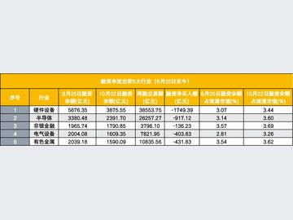

04
经济日报：贷款增速放缓并非金融支持减弱
中国人民银行近日发布的前三季度金融统计数据显示，9月末，人民币贷款余额283.44万亿元，同比增长4.8%。

10月23日，财政部举行2026年前三季度财政收支情况新闻发布会。财政部相关负责人表示，将做好政策储备，紧扣居民消费、民间投资、供需结构优化等关键环节…
前三季度全国发行新增地方政府专项债券约3.56万亿元、发行进度达81%——财政部10月23日发布的最新数据，成为今年财政政策发力于“债”的生动体现。
1、国务院总理李强10月16日主持召开国务院常务会议，听取“人工智能+”行动进展情况汇报。
中国人民银行近日发布的前三季度金融统计数据显示，9月末，人民币贷款余额283.44万亿元，同比增长4.8%。
近日，人民银行深圳市分行、国家外汇管理局深圳市分局举行2026年三季度新闻发布会，介绍深圳金融运行有关情况。

财政部相关部门负责人昨天介绍，今年前三季度，我国地方政府专项债券加快发行使用，有效发挥专项债惠民生、促投资、补短板的政策效能。

容百科技（SH688005，股价20.39元，市值145.71亿元）10月23日晚间发布公告称，拟在襄阳综合保税区内投资建设年产20万吨钠电正极材料一体化项…

10月22日，辽宁前三季度经济数据出炉：GDP增长2.4%，固定资产投资下降32.4%，规上工业增加值下降1.9%，社零总额下降1.6%。

10月23日，在岸人民币对美元即期汇率盘中触及6.6696，离岸人民币同步站上6.6688一线，双双刷新2022年7月以来高位。

财联社10月25日讯（记者 王晨）融资盘撤退到哪一步了？这可能是眼下市场最关心的问题之一。
